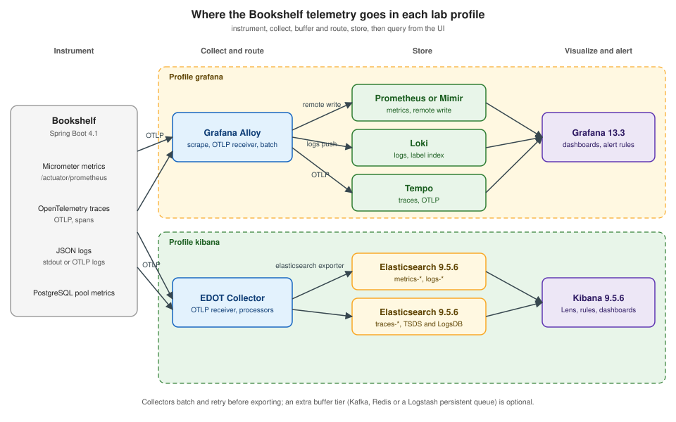

Telemetry Collection Pipelines
|
This content was generated with the assistance of AI and should be verified against the official documentation before being relied on in production. |
Checked on 2026-11-09 against Grafana 13.3.x and Kibana 9.5.x.
Telemetry does not appear in a dashboard by itself. A pipeline carries it: the application is instrumented to emit it, a collector receives, enriches, batches and routes it, and a backend stores it. The choices made in that pipeline decide which labels and fields exist (and therefore which panels and alert rules are possible), how much is lost when a component is down, and how much the whole thing costs. Most "my alert never fired" incidents trace back to a pipeline problem, not a rule problem.
This page describes the building blocks that both tool stacks use, the differences between them, and where the Bookshelf telemetry flows in each profile of the lab (see Hands-On Lab). The signals and labels themselves are explained in Observability Fundamentals.

Instrumentation
Instrumentation is the code or agent that produces the signals. For a Spring Boot service the two layers in use are:
-
Micrometer, the metrics facade of Spring Boot, which publishes Prometheus-format metrics on
/actuator/prometheusand can also export over OTLP. -
OpenTelemetry, which provides the SDK and the OTLP wire protocol for traces, metrics and logs.
The Bookshelf setup is already described in Metrics and Observability and Logging (Quarkus equivalents are in Quarkus Observability), so this page starts at the application boundary. Two decisions are made there and constrain everything downstream: whether metrics are pulled (Prometheus scraping the endpoint) or pushed (OTLP), and which resource attributes (service name, version, environment) the SDK stamps on every signal. The push versus pull trade-off is explained in Observability Fundamentals.
Elastic ships its own tested distributions of the OpenTelemetry SDKs, called EDOT. The reference lists Java, .NET, Node.js, PHP, Python, Android and iOS as generally available and a browser SDK as technical preview (Source: Elastic Distribution of OpenTelemetry). Plain OpenTelemetry SDKs work with both stacks, because both accept OTLP.
The OpenTelemetry Collector
The OpenTelemetry Collector is a vendor-agnostic way to receive, process and export telemetry. It can replace several agents, accepts open formats such as Jaeger, Prometheus and Fluent Bit data, and can send to one or more backends. The same code base can be run as an agent or as a collector. Its components come in five kinds: receivers, processors, exporters, connectors and extensions (Source: OpenTelemetry Collector).
A configuration declares components and then enables them in pipelines, one per signal. Only components referenced in the
service section are active, processors run in the order they are listed, a receiver or exporter may feed several pipelines, and
a processor used by several pipelines gets one instance per pipeline
(Source: Collector configuration).
receivers:
otlp:
protocols:
grpc:
endpoint: 0.0.0.0:4317
http:
endpoint: 0.0.0.0:4318
processors:
batch:
exporters:
otlp_grpc:
endpoint: otelcol:4317
sending_queue:
batch:
service:
pipelines:
traces:
receivers: [otlp]
processors: [batch]
exporters: [otlp_grpc]
metrics:
receivers: [otlp]
processors: [batch]
exporters: [otlp_grpc]
logs:
receivers: [otlp]
processors: [batch]
exporters: [otlp_grpc]Source: Collector configuration, minimal configuration example. The
exporter forwards to a second collector named otelcol; in a real pipeline replace it with the exporter of your backend. Check
a file with otelcol validate --config=<file>.
Collectors are deployed in two roles: close to the workload (an agent, on the host or as a sidecar or DaemonSet) and as a central gateway that aggregates, filters and routes. Elastic documents the same two modes for its collector (see below). Michael Hausenblas (chapter 4) lists agent selection criteria that still apply: the security of the agent and of what it handles, its performance and resource use, and its non-functional requirements.
Grafana Alloy
Grafana Alloy is Grafana’s distribution of the OpenTelemetry Collector with built-in Prometheus pipelines. It handles logs, metrics, traces and profiles (native Loki and Pyroscope support) and sends them to Grafana Cloud, a self-managed Grafana stack or other compatible platforms. A pipeline is built from components, each doing one job such as receiving, transforming or sending (Source: Grafana Alloy).
Alloy replaces two older Grafana collectors, and anything still running them is out of support.
-
Grafana Agent (Static, Flow and Operator) reached end of life on 2025-11-01 (Source: Migrate to Alloy). Migration is
alloy convert --source-format=static --output=<OUTPUT> <INPUT>, or run Alloy with--config.format=staticon the existing file (Source: Migrate from Grafana Agent Static). -
Promtail reached end of life on 2026-03-02, and the Loki documentation says to migrate to Alloy (Source: Promtail). The conversion command is
alloy convert --source-format=promtail --output=<OUTPUT> <INPUT>(Source: Migrate from Promtail).
The following Alloy configuration is an alternative wiring for the lab’s grafana profile, in which Alloy is the single collector. It
scrapes the Bookshelf endpoint for metrics, accepts OTLP from the application for traces and logs (and for metrics too, if you switch the
application to push, in which case remove the scrape to avoid duplicates), and routes metrics to Prometheus by remote write, logs to Loki
and traces to Tempo. The lab’s own alloy/config.alloy is smaller: Prometheus scrapes Bookshelf directly, and Alloy only tails the JSON
log file into Loki and forwards OTLP traces to Tempo.
prometheus.remote_write "lab" {
endpoint {
url = "http://prometheus:9090/api/v1/write"
}
}
prometheus.scrape "bookshelf" {
targets = [
{"__address__" = "bookshelf:8080"},
]
metrics_path = "/actuator/prometheus"
scrape_interval = "15s"
forward_to = [prometheus.remote_write.lab.receiver]
}
otelcol.receiver.otlp "bookshelf" {
grpc {
endpoint = "0.0.0.0:4317"
}
http {
endpoint = "0.0.0.0:4318"
}
output {
metrics = [otelcol.processor.batch.default.input]
logs = [otelcol.processor.batch.default.input]
traces = [otelcol.processor.batch.default.input]
}
}
otelcol.processor.batch "default" {
output {
metrics = [otelcol.exporter.prometheus.lab.input]
logs = [otelcol.exporter.loki.lab.input]
traces = [otelcol.exporter.otlphttp.tempo.input]
}
}
otelcol.exporter.prometheus "lab" {
forward_to = [prometheus.remote_write.lab.receiver]
}
otelcol.exporter.loki "lab" {
forward_to = [loki.write.lab.receiver]
}
loki.write "lab" {
endpoint {
url = "http://loki:3100/loki/api/v1/push"
}
}
otelcol.exporter.otlphttp "tempo" {
client {
endpoint = "http://tempo:4318"
tls {
insecure = true
}
}
}Reference: prometheus.scrape (the scrape
arguments, scrape_interval defaults to 60 s and metrics_path to /metrics) and
Send OpenTelemetry data to the Grafana stack (the
receiver, batch processor and the Prometheus, Loki and Tempo exporter patterns). The page’s examples target Grafana Cloud with
basic authentication; the lab config above is the same wiring against unauthenticated local services. The host names, ports
and the tls block for Tempo are lab assumptions: check them against the compose file and against the
otelcol.exporter.otlphttp reference
before relying on them. Prometheus must be started with --web.enable-remote-write-receiver, which exposes /api/v1/write
(Source: Prometheus storage).
Prometheus scraping
Prometheus pulls from targets declared in scrape_configs. job_name is required and unique, scrape_interval defaults to
the global value (itself 1m by default), and metrics_path defaults to /metrics
(Source: Prometheus configuration). Bookshelf
exposes a different path:
global:
scrape_interval: 15s
scrape_configs:
- job_name: bookshelf
metrics_path: /actuator/prometheus
static_configs:
- targets: ["bookshelf:8080"]Reference: Prometheus configuration. Use this form
instead of the Alloy scrape component when a plain Prometheus does the pulling. Whichever scrapes, set the same value as the
Scrape interval of the Grafana data source, because $__rate_interval is computed from it (see
Metric Types and Aggregation). Service discovery,
relabeling, exporters and the Pushgateway are covered in
Service Discovery and Relabeling and
Exporters and Pushgateway; Kubernetes collection in
Observability: Logging and Metrics and Docker logging in
Resources, Logging and Monitoring.
Elastic Agent, Fleet and the EDOT Collector
Elastic Agent is a single agent that collects logs, metrics and other data from a host and can pull from remote services. Fleet is the Kibana UI and communication layer that manages agents and their policies. An agent runs standalone (you manage its configuration locally, which the documentation recommends for advanced users only) or Fleet-managed, where you configure and monitor agents centrally and upgrade them remotely. A policy defines which integrations run on which hosts, and enrolled agents pick up a changed policy at their next check-in. Integrations are packaged collection plus prebuilt dashboards and ingest pipelines (Source: Fleet and Elastic Agent).
The default path for new host and application collection is OpenTelemetry. The EDOT Collector is a tailored build of the
OpenTelemetry Collector, and starting in 9.5 that capability is built into Elastic Agent; before 9.5 it was a standalone
product
(Source: Elastic Distribution of OpenTelemetry). It runs in two modes. In
Agent mode it runs close to the data (on the host, as a sidecar or as a Kubernetes DaemonSet) and is used when you collect
directly from hosts and have few of them. In Gateway mode it is a central aggregation point that receives data from agents or
instrumented applications, centralises scaling and pre-processing, and reduces the connections to the Elastic backend; a
self-managed Elasticsearch needs Gateway mode for APM functionality, because the gateway runs the elasticapm processor and
connector
(Source: EDOT Collector deployment modes).
The default standalone configuration uses the filelog, hostmetrics and otlp receivers, the resourcedetection
processor and two Elasticsearch exporters. elasticsearch/otel writes in OTel-native mapping mode and is used for logs,
SDK metrics and traces, while elasticsearch/ecs writes host metrics in ECS format for compatibility. The elasticapm
processor and connector enrich traces and produce pre-aggregated APM metrics, both are needed for the APM UIs, and neither is in
the upstream Collector Contrib distribution
(Source: Default standalone EDOT configuration).
receivers:
otlp:
protocols:
grpc:
endpoint: 0.0.0.0:4317
http:
endpoint: 0.0.0.0:4318
processors:
batch:
exporters:
elasticsearch/otel:
endpoints:
- ${ELASTIC_ENDPOINT}
api_key: ${ELASTIC_API_KEY}
mapping:
mode: otel
service:
pipelines:
traces:
receivers: [otlp]
processors: [batch]
exporters: [elasticsearch/otel]
metrics:
receivers: [otlp]
processors: [batch]
exporters: [elasticsearch/otel]
logs:
receivers: [otlp]
processors: [batch]
exporters: [elasticsearch/otel]Reference: Default standalone EDOT Collector configuration
(the elasticsearch/otel exporter block) combined with the Collector pipeline layout shown earlier. This minimal
application-only configuration is a teaching reduction: it has no elasticapm enrichment, so the Kibana APM views need the
full default configuration for your platform; the lab’s otel/config.yaml adds the elasticapm processor and connector. ELASTIC_ENDPOINT
and ELASTIC_API_KEY are placeholders for your own deployment; the lab instead connects to http://elasticsearch:9200 as elastic with
ELASTIC_PASSWORD.
Beats and Logstash
Beats are lightweight data shippers installed as agents (Filebeat for logs, Metricbeat for metrics, Heartbeat for availability, and others), sending to Elasticsearch directly or through Logstash (Source: Beats). Logstash is the heavier pipeline tool, with input, filter and output plugins to enrich and transform events (Source: Logstash). For new deployments Elastic Agent with Fleet gives a single, centrally managed agent in place of several separately configured Beats, while Logstash remains the tool for complex transformation pipelines (the Beats and Logstash reference pages themselves do not draw that comparison, so check the Fleet page for what an integration covers). Keep Beats and Logstash for existing estates and for cases an Elastic Agent integration does not cover.
Semantic conventions and ECS
Two vocabularies describe the same telemetry. OpenTelemetry semantic conventions are a standard vocabulary of attribute names that keeps telemetry consistent across code, libraries and platforms, for traces, metrics, logs, profiles and resources (Source: Semantic conventions). The Elastic Common Schema (ECS) is an open specification that defines a common set of fields for event data stored in Elasticsearch, with a name, datatype and description for each, so that data from many sources can be analysed and correlated together (Source: Elastic Common Schema).
For monitoring work the practical effect is that the field you query depends on the path the data took. A request duration
from an OpenTelemetry SDK carries an attribute such as http.server.request.duration and arrives in Elasticsearch in OTel-native mode,
while the same event mapped through an ECS-oriented integration uses ECS field names. The EDOT exporter exposes the choice
as the mapping.mode (otel or ecs) shown above. In Grafana the names are whatever the metric is called in Prometheus,
after the OTLP-to-Prometheus conversion of dots into underscores, so a panel written for one pipeline does not
move to another unchanged. Decide the convention once, put it in the collector rather than in each application, and use the
same service name in every signal, as
Observability Fundamentals requires for correlation.
Buffering and back-pressure
Collection is not lossless by default. A backend that is slow or down makes the collector queue data, retry or drop it, and a collector that is restarted loses whatever it only held in memory. Three mechanisms matter.
-
Batching and exporter queues. The
batchprocessor groups telemetry before export, and the Collector exporter shown above has asending_queue. Alloy uses the same batch processor component. -
Persistent queues. Logstash can queue events on disk with
queue.type: persisted. The queue absorbs bursts without an external buffer, retries events that were in flight after a crash (at-least-once delivery, except for inputs without acknowledgements such as tcp and udp), and applies back-pressure by refusing new events when it is full.queue.max_bytesdefaults to 1gb per pipeline and the queue must be on a local filesystem, not NFS (Source: Logstash persistent queues). -
A broker tier. Saurabh Chhajed describes placing a message broker (Redis, or Kafka for high throughput) between shippers and Logstash so that the broker buffers while Logstash is busy indexing. This remains a valid architecture for very high volume, but it is one more system to run; try the exporter queues and persistent queues first.
# logstash.yml
queue.type: persisted
queue.max_bytes: 8gbSource: Logstash persistent queues, example logstash.yml.
Back-pressure has a monitoring consequence: a full queue slows the sender, and the application may block or drop spans. Watch the collector’s own metrics (queue size, dropped and refused items) and alert on them; a pipeline that is not itself monitored is the most common reason for a silent "no data" alert.
Where the Bookshelf telemetry goes
| Signal | grafana profile |
kibana profile |
|---|---|---|
Metrics |
Scraped from |
OTLP to the EDOT Collector, written to Elasticsearch metrics data streams. The lab’s stand-in exports no OTLP metrics, so the
only metrics documents are the APM aggregates that the |
Logs |
JSON log file tailed into Loki by Alloy (or pushed over OTLP and exported with the Loki exporter). |
OTLP or file collection by the EDOT Collector, written to Elasticsearch logs data streams. |
Traces |
OTLP through Alloy to Tempo. |
OTLP to the EDOT Collector, enriched and written to Elasticsearch trace data streams. |
The exact data stream names and the Compose wiring are in the lab page. The retention and cost of each backend are in Storage, Retention and Cost.
What can go wrong
-
Labels or fields differ between pipelines. A dashboard built on OTel-native names breaks on ECS data and the reverse.
-
Everything dropped silently. A collector without queues drops data when the backend is down. Alert on exporter failures.
-
Too many hops. Each extra collector adds latency and a failure point; do not add a gateway, a broker and a persistent queue all at once without a reason.
-
Cumulative versus delta. OTLP metrics converted to Prometheus need cumulative temporality (see Metric Types and Aggregation).
-
Legacy agents. Grafana Agent and Promtail receive no fixes; plan the Alloy migration.
-
Open endpoints.
0.0.0.0receivers in a lab are fine; in production restrict and authenticate OTLP, and do not put API keys in a configuration file in version control.
Verify it in the lab
-
Start the
grafanaprofile. In the Alloy UI (http://localhost:12345), check thatloki.source.file.bookshelfandotelcol.receiver.otlp.defaultare healthy; in Prometheus theup{job="bookshelf"}query returns 1. -
Query a Bookshelf request metric in Explore, then open Loki and filter on the Bookshelf service, then open a trace in Tempo.
-
Stop the Loki container, generate load, restart it, and note whether a gap remains. Repeat with a larger exporter queue and compare.
-
Start the
kibanaprofile, open Discover and check that the logs and traces data streams (and the APM metrics aggregates) contain documents with the same service name; open a trace and a log record that share a trace id. -
Stop Elasticsearch briefly and read the EDOT Collector log for retry and queue messages.
In the books
Rob Chapman and Peter Holmes (chapters 1 and 2) describe collecting logs, metrics and traces for the Grafana stack, using Grafana Agent for collection, which is end of life: use Alloy. Michael Hausenblas (chapter 4) surveys log routers (Fluentd and Fluent Bit), Prometheus, the OpenTelemetry Collector and how to select an agent. Saurabh Chhajed (chapters 1, 2 and 9) and Nadine Melachi (chapter 1) present the Beats to Logstash to Elasticsearch to Kibana pipeline of the ELK era, with Logstash Forwarder in Chhajed and Beats managed one by one in Melachi; both are superseded by Elastic Agent with Fleet and, for new work, EDOT. Chhajed’s broker-based buffering idea survives as Kafka or Redis tiers and Logstash persistent queues. The publisher links are in the bibliography on the section index.
Where to go next
-
Storage, Retention and Cost covers where the data lands and what it costs to keep.
-
Hands-On Lab contains the full Compose files for both profiles.
-
Grafana and Kibana continue with data sources and data views.